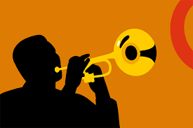
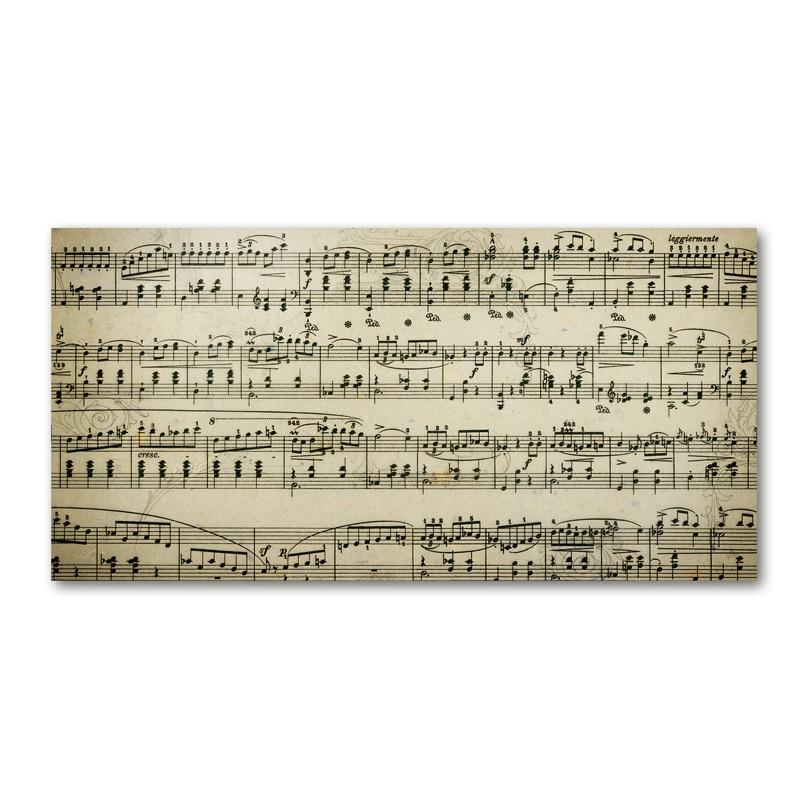

Instrumentele muzicale sunt utilizate în interpretarea compozițiilor muzicale și sunt de obicei clasificate în patru mari grupe tradiționale: cu coarde, suflători din lemn, suflători din alamă și instrumente de percuție, la care se adaugă suflători cu structură complexă și instrumentele electronice. Acestea se folosesc pentru a crea muzica, fiind făcute din plastic, sârma, pânza etc.

Antichitate: s-au păstrat puține exemple de compoziții. Acestea sunt bazate pe moduri. Instrumentele reprezentative ale Greciei Antice sunt lira (cu care este reprezentat Apollo) și aulos (vedeți figura). Pitagora (aprox. 570 î.Hr. - 495 î.Hr.) a considerat că esența muzicii este dată de rapoarte de numere simple proporționale cu lungimea coardelor monocordului pentru diferite note.
Evul Mediu (500-1400): cântul bizantin și gregorian domină discursul muzical. Leonin, un compozitor asociat cu catedrala Notre Dame din Paris, a organizat aproximativ în anul 1200 primul cor pe mai multe voci.[6] Pentru următorii 400 de ani acesta a fost principalul mod de exprimare muzicală. [7] Instrumentele muzicale importante au fost orga (inițial portabilă, de proveniența bizantină) și lăuta (utilizată în muzica laică, de exemplu de trubaduri).
Renaștere (1400-1600): muzica vocală corală domină. Vocile sunt combinate în feluri din ce în ce mai complicate. Cântul gregorian stă la baza unei voci, nu a întregii compoziții polifonice.
Baroc (1600-1750): muzica rămâne polifonică, dar devine tonală (se trece de la moduri la game). Instrumentele din familia viorii sunt perfecționate și muzica instrumentală se dezvoltă mult. În tradiția vocală apare opera. Jean-Philippe Rameau (1683-1764) a considerat că esența muzicii constă în combinarea vibrației coardelor cu o frecvență invers proporțională cu lungimea acestora.
Perioada clasică și romantică (1750-1910): muzica rămâne tonală, dar devine omofonă. Pianul capătă o importanță deosebită.
Secolul XX: Noi experiențe muzicale atonale, neoclasicism, jazz, blues, rock, etc. La începutul secolului al XX-lea, Ernst Kurth (1886-1946) a propus idea conform căreia muzica este în primul rând o senzație psihologică.
În România au fost compuse imnuri la mănăstirea Cozia în secolele al XIV-lea și al XV-lea. Muzica laică a fost cultivată din secolul al XVII-lea la curțile domnești din București și Iași. Conservatorul de Muzică și Declamație, cu filiale la București și Iași, a fost înființat în anul 1864.